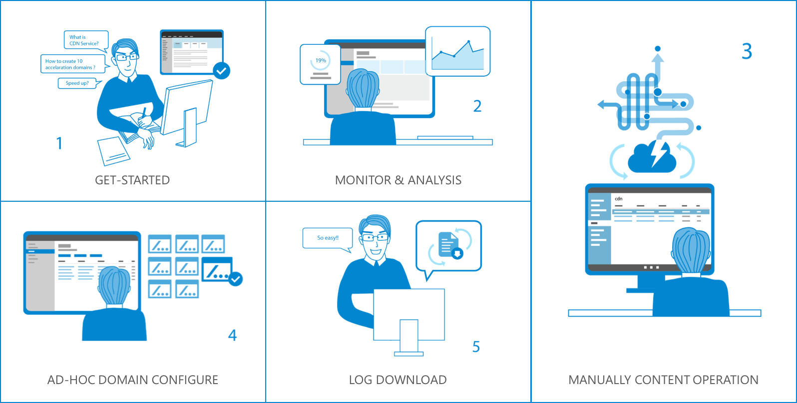
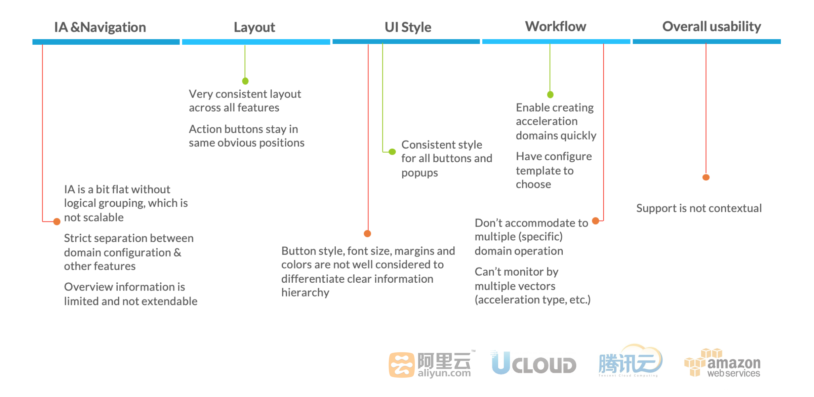

WHAT IS AZURE CDN
In online content delivery, user experience is everything. Azure Content Delivery Network (CDN) lets you reduce load times, save bandwidth, and speed responsiveness—whether you’re developing or managing websites or mobile apps, or encoding and distributing streaming media, gaming software, firmware updates, or IoT endpoints.
In order to meet the needs of users to the greatest extent and offer them the best experience, we redesigned the entire system for user optimization.
Persona & Scenario
Peter, 31 years old IT pros in a new media company. His primary job is maintaining several websites/ web apps for his company, including official website and news portals. After evaluation, his company decided to use CDN service from a cloud provider.

1. Get Started: He plans to create 10 acceleration domains sliced by sites, and start with 1st one. His not familiar with terminology, and have to turn to contextual help to finish all the fields. He’s eager to know what he filled is correct and if the creation is successful. For the rest 9, he wants to create more quickly.
2. Monitor & Analysis: After creation, he generally cares about the overall data flow which is related with billings, by multiple vectors, when there’re abrupt change of bandwidth, source flow, acceleration speed, he would like to drill down to see the reason. He occasionally check log analysis report to see if optimizing configuration.
3. Manually Content Operation: He gets notification from the dev team that they just have refresh all the images on all news websites, that requires manual cache refresh across all portals. He needs input the URLs for each domain name, and validate the results.
4. Ad-Hoc Domain Configuration: After checking the log analysis result, he decide to change the refresh rules of domain name for 2 news portal. He goes through the domain list and select one domain name, and change the refresh cycle into one hour.
5. Log Download: He also needs download butch of log as backup.
COMPETITOR ANALYSIS
To summarize from competitor analysis:
- IA needs to be more consolidated into groups by user goals/frequency
- Remove the strict separation between different actions
- Keep the overall consistency while tweaking UI style to differentiate clear information hierarchy visually
- Improve navigation & operation efficiency for multiple items

design goals
Based on the user stories created above, we summarize the users needs for each steps.
1. Get Started
- Quick way to get started
- Contextual help to get users familiar with terminology
- Immediate & update-to-date feedbacks on asynchronous operation
2. Monitor & Analysis
- Intelligent reporting view that empower discovering, deep diving, problem anticipation and suggestion
- Flexible and customizable reporting ( customizable report items, customizable view, etc.)
3. Manually Content Operation
Easy to input, manage, & review in a centralized place efficiently
4. Ad-Hoc Domain Configuration
- Easy to locate to specific item
- Focus on current actions while can easily navigate to other domain
5. Log Download
Accurately filter out log information